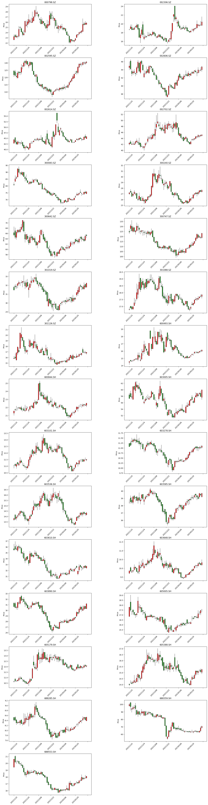

import pandas as pd
from typing import Dict,List
from scr.pattern_detect import find_RoundingBottom
from scr.plotting import view_gride_chart
数据读取#
时间范围:2014-01-01至2023-02-07
价格数据为后复权数据
data:pd.DataFrame = pd.read_csv('data/data.csv',index_col=[0,1],parse_dates=[0])
形态匹配#
形态定义#
取当日向前追溯两年的股价数据进行核回归,根据核回归的结果找到所有局部极值点,对于每个极小值点\(𝑃_{𝑙𝑜𝑤}\),找到其前面一个极大值点;
在这个极大值点的邻域中(本文取前后20天范围内)找到股价序列的最大值,作为前一盘整区的高点,记为\(𝑃_{ℎ𝑖𝑔ℎ}\)，定义\(𝑃_{ℎ𝑖𝑔ℎ}\)到\(𝑃_{𝑙𝑜𝑤}\)的水平距离为圆弧的半弦长𝑑(要求𝑑大于10天);
定义在\(P_{𝑙𝑜𝑤}\)前后𝑑天范围内的股价序列为s,收益率绝对值序列为r,检验是否满足圆弧底形态的条件:
s在\(P_{low}\)左(右)侧下跌(上涨)的所占比例大于某一参数(本文取0.4);
r的均值小于某一参数(本文取0.03);
\((P_{ℎ𝑖𝑔ℎ}⁄P_{low} − 1)/𝑑\)、\((P_{𝑏𝑢𝑦}⁄P_{low}− 1)/𝑑\)小于某一参数(本文取0.03);
若识别为圆弧底形态,则在s的右半部分寻找是否存在大于\(P_{ℎ𝑖𝑔ℎ}\)且已经突破200日均线的点,若存在,则将第一个突破\(P_{ℎ𝑖𝑔ℎ}\)的点作为买入点\(𝑃_{𝑏𝑢𝑦}\)。同时要求\((1 − p) ∗ (P_{ℎ𝑖𝑔ℎ} − 𝑃_{𝑙𝑜𝑤}) < 𝑃_{𝑏𝑢𝑦} − 𝑃_{𝑙𝑜𝑤} < (1 + p) ∗ (P_{ℎ𝑖𝑔ℎ} − 𝑃_{𝑙𝑜𝑤})\)(本文中p取0.3);
下面为出现圆弧底时对应的买入/卖出点
若开仓后的某日回归曲线中\(𝑃_{𝑙𝑜𝑤}后面出现一个极大值点,则把当日作为卖出点\)𝑃_{𝑠𝑒𝑙𝑙}$;
如果下跌幅度超过10%则触发止损条件,卖出股票;
对于其他极小值点-极大值点组合,重复上述过程。
除了找到极值点用到了核回归的结果,其他步骤用的都是实际的价格数据.

查找2023-02-07日当天符合圆弧底形态的股票
output: Dict = {
code: find_RoundingBottom(
slice_df.reset_index(level=1, drop=True), code=code
)
for code, slice_df in data.groupby(level='code')
}
2023-03-01 14:39:48.468 | INFO | scr.pattern_detect:find_RoundingBottom:280 - 当前时点:2023-02-09 000798.SZ=>符合圆弧底/v型结构:True,判断是否是买点:1.是否大于200日均线[True];2.符合在p_high至p_low的30%~130%区间内[False]
2023-03-01 14:40:33.252 | INFO | scr.pattern_detect:find_RoundingBottom:280 - 当前时点:2023-02-09 002306.SZ=>符合圆弧底/v型结构:True,判断是否是买点:1.是否大于200日均线[True];2.符合在p_high至p_low的30%~130%区间内[True]
2023-03-01 14:40:33.252 | INFO | scr.pattern_detect:find_RoundingBottom:286 - 当前时点:2023-02-09 002306.SZ:为圆弧底/V型低且符合买点
2023-03-01 14:41:01.373 | INFO | scr.pattern_detect:find_RoundingBottom:280 - 当前时点:2023-02-09 002595.SZ=>符合圆弧底/v型结构:True,判断是否是买点:1.是否大于200日均线[True];2.符合在p_high至p_low的30%~130%区间内[True]
2023-03-01 14:41:01.374 | INFO | scr.pattern_detect:find_RoundingBottom:286 - 当前时点:2023-02-09 002595.SZ:为圆弧底/V型低且符合买点
2023-03-01 14:41:02.349 | INFO | scr.pattern_detect:find_RoundingBottom:280 - 当前时点:2023-02-09 002606.SZ=>符合圆弧底/v型结构:True,判断是否是买点:1.是否大于200日均线[True];2.符合在p_high至p_low的30%~130%区间内[True]
2023-03-01 14:41:02.350 | INFO | scr.pattern_detect:find_RoundingBottom:286 - 当前时点:2023-02-09 002606.SZ:为圆弧底/V型低且符合买点
2023-03-01 14:41:03.139 | INFO | scr.pattern_detect:find_RoundingBottom:280 - 当前时点:2023-02-09 002614.SZ=>符合圆弧底/v型结构:True,判断是否是买点:1.是否大于200日均线[True];2.符合在p_high至p_low的30%~130%区间内[False]
2023-03-01 14:41:11.623 | INFO | scr.pattern_detect:find_RoundingBottom:280 - 当前时点:2023-02-09 002702.SZ=>符合圆弧底/v型结构:True,判断是否是买点:1.是否大于200日均线[True];2.符合在p_high至p_low的30%~130%区间内[False]
2023-03-01 14:41:48.568 | INFO | scr.pattern_detect:find_RoundingBottom:280 - 当前时点:2023-02-09 300083.SZ=>符合圆弧底/v型结构:True,判断是否是买点:1.是否大于200日均线[False];2.符合在p_high至p_low的30%~130%区间内[False]
2023-03-01 14:42:03.480 | INFO | scr.pattern_detect:find_RoundingBottom:280 - 当前时点:2023-02-09 300240.SZ=>符合圆弧底/v型结构:True,判断是否是买点:1.是否大于200日均线[False];2.符合在p_high至p_low的30%~130%区间内[False]
2023-03-01 14:42:42.438 | INFO | scr.pattern_detect:find_RoundingBottom:280 - 当前时点:2023-02-09 300642.SZ=>符合圆弧底/v型结构:True,判断是否是买点:1.是否大于200日均线[True];2.符合在p_high至p_low的30%~130%区间内[True]
2023-03-01 14:42:42.439 | INFO | scr.pattern_detect:find_RoundingBottom:286 - 当前时点:2023-02-09 300642.SZ:为圆弧底/V型低且符合买点
2023-03-01 14:42:52.112 | INFO | scr.pattern_detect:find_RoundingBottom:280 - 当前时点:2023-02-09 300747.SZ=>符合圆弧底/v型结构:True,判断是否是买点:1.是否大于200日均线[False];2.符合在p_high至p_low的30%~130%区间内[True]
2023-03-01 14:43:10.541 | INFO | scr.pattern_detect:find_RoundingBottom:280 - 当前时点:2023-02-09 301019.SZ=>符合圆弧底/v型结构:True,判断是否是买点:1.是否大于200日均线[False];2.符合在p_high至p_low的30%~130%区间内[True]
2023-03-01 14:43:13.036 | INFO | scr.pattern_detect:find_RoundingBottom:280 - 当前时点:2023-02-09 301088.SZ=>符合圆弧底/v型结构:True,判断是否是买点:1.是否大于200日均线[False];2.符合在p_high至p_low的30%~130%区间内[True]
2023-03-01 14:43:13.613 | INFO | scr.pattern_detect:find_RoundingBottom:280 - 当前时点:2023-02-09 301126.SZ=>符合圆弧底/v型结构:True,判断是否是买点:1.是否大于200日均线[False];2.符合在p_high至p_low的30%~130%区间内[False]
2023-03-01 14:43:52.532 | INFO | scr.pattern_detect:find_RoundingBottom:280 - 当前时点:2023-02-09 600493.SH=>符合圆弧底/v型结构:True,判断是否是买点:1.是否大于200日均线[True];2.符合在p_high至p_low的30%~130%区间内[False]
2023-03-01 14:44:22.626 | INFO | scr.pattern_detect:find_RoundingBottom:280 - 当前时点:2023-02-09 600844.SH=>符合圆弧底/v型结构:True,判断是否是买点:1.是否大于200日均线[False];2.符合在p_high至p_low的30%~130%区间内[False]
2023-03-01 14:44:53.733 | INFO | scr.pattern_detect:find_RoundingBottom:280 - 当前时点:2023-02-09 603005.SH=>符合圆弧底/v型结构:True,判断是否是买点:1.是否大于200日均线[False];2.符合在p_high至p_low的30%~130%区间内[True]
2023-03-01 14:45:00.444 | INFO | scr.pattern_detect:find_RoundingBottom:280 - 当前时点:2023-02-09 603101.SH=>符合圆弧底/v型结构:True,判断是否是买点:1.是否大于200日均线[False];2.符合在p_high至p_low的30%~130%区间内[False]
2023-03-01 14:45:08.836 | INFO | scr.pattern_detect:find_RoundingBottom:280 - 当前时点:2023-02-09 603278.SH=>符合圆弧底/v型结构:True,判断是否是买点:1.是否大于200日均线[False];2.符合在p_high至p_low的30%~130%区间内[True]
2023-03-01 14:45:19.303 | INFO | scr.pattern_detect:find_RoundingBottom:280 - 当前时点:2023-02-09 603536.SH=>符合圆弧底/v型结构:True,判断是否是买点:1.是否大于200日均线[False];2.符合在p_high至p_low的30%~130%区间内[False]
2023-03-01 14:45:21.157 | INFO | scr.pattern_detect:find_RoundingBottom:280 - 当前时点:2023-02-09 603585.SH=>符合圆弧底/v型结构:True,判断是否是买点:1.是否大于200日均线[True];2.符合在p_high至p_low的30%~130%区间内[True]
2023-03-01 14:45:21.158 | INFO | scr.pattern_detect:find_RoundingBottom:286 - 当前时点:2023-02-09 603585.SH:为圆弧底/V型低且符合买点
2023-03-01 14:45:23.053 | INFO | scr.pattern_detect:find_RoundingBottom:280 - 当前时点:2023-02-09 603610.SH=>符合圆弧底/v型结构:True,判断是否是买点:1.是否大于200日均线[False];2.符合在p_high至p_low的30%~130%区间内[False]
2023-03-01 14:45:24.874 | INFO | scr.pattern_detect:find_RoundingBottom:280 - 当前时点:2023-02-09 603648.SH=>符合圆弧底/v型结构:True,判断是否是买点:1.是否大于200日均线[True];2.符合在p_high至p_low的30%~130%区间内[False]
2023-03-01 14:45:37.983 | INFO | scr.pattern_detect:find_RoundingBottom:280 - 当前时点:2023-02-09 603890.SH=>符合圆弧底/v型结构:True,判断是否是买点:1.是否大于200日均线[True];2.符合在p_high至p_low的30%~130%区间内[True]
2023-03-01 14:45:37.984 | INFO | scr.pattern_detect:find_RoundingBottom:286 - 当前时点:2023-02-09 603890.SH:为圆弧底/V型低且符合买点
2023-03-01 14:45:44.588 | INFO | scr.pattern_detect:find_RoundingBottom:280 - 当前时点:2023-02-09 605005.SH=>符合圆弧底/v型结构:True,判断是否是买点:1.是否大于200日均线[True];2.符合在p_high至p_low的30%~130%区间内[True]
2023-03-01 14:45:44.588 | INFO | scr.pattern_detect:find_RoundingBottom:286 - 当前时点:2023-02-09 605005.SH:为圆弧底/V型低且符合买点
2023-03-01 14:45:47.632 | INFO | scr.pattern_detect:find_RoundingBottom:280 - 当前时点:2023-02-09 605179.SH=>符合圆弧底/v型结构:True,判断是否是买点:1.是否大于200日均线[True];2.符合在p_high至p_low的30%~130%区间内[False]
2023-03-01 14:45:50.323 | INFO | scr.pattern_detect:find_RoundingBottom:280 - 当前时点:2023-02-09 605388.SH=>符合圆弧底/v型结构:True,判断是否是买点:1.是否大于200日均线[False];2.符合在p_high至p_low的30%~130%区间内[False]
2023-03-01 14:46:04.024 | INFO | scr.pattern_detect:find_RoundingBottom:280 - 当前时点:2023-02-09 688285.SH=>符合圆弧底/v型结构:True,判断是否是买点:1.是否大于200日均线[True];2.符合在p_high至p_low的30%~130%区间内[True]
2023-03-01 14:46:04.024 | INFO | scr.pattern_detect:find_RoundingBottom:286 - 当前时点:2023-02-09 688285.SH:为圆弧底/V型低且符合买点
2023-03-01 14:46:06.806 | INFO | scr.pattern_detect:find_RoundingBottom:280 - 当前时点:2023-02-09 688359.SH=>符合圆弧底/v型结构:True,判断是否是买点:1.是否大于200日均线[True];2.符合在p_high至p_low的30%~130%区间内[False]
2023-03-01 14:46:10.498 | INFO | scr.pattern_detect:find_RoundingBottom:280 - 当前时点:2023-02-09 688553.SH=>符合圆弧底/v型结构:True,判断是否是买点:1.是否大于200日均线[False];2.符合在p_high至p_low的30%~130%区间内[True]
可视化结果#
output_df:pd.DataFrame = pd.DataFrame(output,index=['是否圆弧底','是否符合买入点']).T
output_df.head()
| 是否圆弧底 | 是否符合买入点 | |
|---|---|---|
| 000001.SZ | False | False |
| 000002.SZ | False | False |
| 000004.SZ | False | False |
| 000005.SZ | False | False |
| 000006.SZ | False | True |
# 获取符合形态的股票
rounding_bottom:pd.DataFrame = output_df.query("是否圆弧底==True")
# 符合圆弧底形态的股票代码
codes:List = rounding_bottom.index.tolist()
cols:int = 2
size:int = len(codes)
rows:int = size//2 + 1 if size%2 else size/2
view_gride_chart(codes,data,rows=rows,cols=cols,figsize=(20,rows*5+5))
